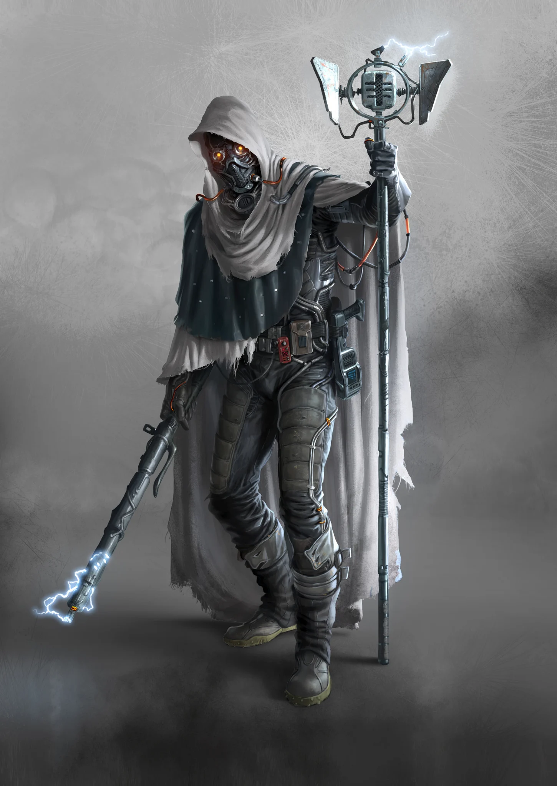

Leaders
- Fragments
- Alias
- Impulse
- Modus
- Paradigmas
- Mirage
- Scalars
- Nullify
CULT DOSSIER
The Omniscient
+1 to maximum skill level

THE CULT
The Chroniclers are heirs to the Stream, the global flow of data that once connected humanity and carried the knowledge of the Bygones. The Eshaton shattered that network, leaving dead servers, isolated caches, fragments of stored information, and machines whose purposes are often forgotten.
The Cult exists to recover what remains. Every artifact bought from a Scrapper, every surviving data store, and every fragment of lost knowledge may help restore another piece of the Stream. Chroniclers believe that when the network lives again, humanity can leave ignorance behind and climb toward the world it lost.
Before the Eshaton, those who became Chroniclers called themselves Streamers, a loose movement immersed in the Stream and the knowledge flowing through it. When catastrophe severed that connection, cultures, records, and centuries of understanding vanished with it.
Chroniclers later named 2073 the Zero Event. Surviving Streamers scavenged Borca for manuals, storage devices, circuit boards, and server stacks. In 2102 they established the Central Cluster in an old freight yard and brought a fragment of the network back online as the Static Stream.
Reactivating the Stream became the Cult's defining purpose. Its oldest layers remain protected by passwords and security systems no living Chronicler fully understands. Every discovery opens another path into the past.
Knowledge alone did not make the Chroniclers powerful. Their defeat at Cologne Cathedral in 2148 taught them that information means little when an enemy can simply break down the door and kill everyone inside.
Afterward, intimidation became policy. Faces disappeared behind masks and mirrored shards. Vocoders distorted voices into mechanical commands. Electricity, light, holography, and controlled technology made Chroniclers appear inhuman to people who barely understood the machines around them.
Most Chroniclers are not warriors, and the Cult benefits when outsiders believe otherwise. Fear and technological spectacle discourage challenges before weapons ever have to be drawn.
The Chroniclers learned to make themselves indispensable. Information became their true commodity.
Scrappers bring artifacts to Alcoves, where Chroniclers assess and purchase them with Drafts. Those Drafts carry value because the Cult stands behind them with information and access to resources. Directions to hidden stores, technical knowledge, reports on enemies, and carefully selected secrets can be worth more than metal or food.
Everything entering Chronicler hands can become part of the Cluster's memory. Rumors are compared, discoveries catalogued, artifacts dissected, and reports preserved. Cities that cooperate gain access to knowledge. Those that alienate the Chroniclers can discover how expensive ignorance becomes.
A Chronicler's place within the Cult is measured by Score. New recruits receive a barcode on the forehead and enter as Bits with almost no standing. Useful work, discoveries, information, and successful assignments increase Score and open access to greater knowledge and technology.
Agents maintain the Cluster's systems. Mediators travel among Alcoves, settlements, and other Cults as messengers, appraisers, and representatives. Streamers possess enough political knowledge and secrets to ruin powerful people, yet discretion is precisely what allows them to reach such status.
Fragments dwell near the center of the system with access to immense portions of the Cluster's accumulated knowledge. In Chronicler society, information is permission, status, currency, and power.
The relationship with Scrappers is one foundation of Chronicler power. Scrappers enter ruins Chroniclers rarely dare explore, recover artifacts, and bring them to Alcoves. Chroniclers provide payment, technical assessment, and a market for finds that might otherwise be useless.
The partnership is not equal. Chroniclers depend on Scrappers to feed the Static Stream with technology, but prefer to control the market and decide which discoveries matter. Scrappers know the ruins; Chroniclers know what much of the recovered technology may be worth.
Every functioning Interfacer, data core, Stream device, or unknown machine can therefore alter the balance between those who found it and those who understand it.
Chroniclers rarely rule openly. Their influence comes from being present wherever decisions depend upon information.
Mediators negotiate access. Streamers advise rulers and accumulate compromising knowledge. Fragments determine what portions of the archives become available. In Justitian, long cooperation with the Judges gives the Cult access to institutions that exclude almost everyone else.
Information can also be withheld, distorted, or released at precisely the right moment. A rival may be ruined without ever seeing a weapon. A ruler may be supported because stability benefits the Cluster, then undermined when becoming an obstacle.
The Cult preserves knowledge for humanity, but the Cluster decides who receives it.
Paradigmas carry Chronicler influence into places where Drafts and politics command little respect. They use technology, psychology, superstition, and spectacle to dominate populations that cannot distinguish machinery from miracles.
Electrical discharges, amplified voices, projected images, and similar devices can make a Paradigma appear supernatural. Their purpose goes beyond theater: they create influence where diplomacy fails, spread misinformation, redirect hostility, and turn local powers against one another when it protects the Cluster.
The public image of the Chroniclers is deliberately restrained. Lethal technology is sanctioned and tightly controlled, helping the Cult appear dependent upon allies for physical protection.
Shutters handle sanctioned missions involving infiltration, violence, theft, or assassination. Successful Shutters may become Fuses, gaining access to hidden caches of deadly technology and deeper secrets. Scalars coordinate these operatives from behind the system.
This separation lets ordinary Chroniclers negotiate while another branch handles problems that information alone cannot solve. Even within the Cult, such operations remain compartmentalized.
A Chronicler whose Score reaches zero becomes a Zero and is removed from the system. Access closes and status vanishes, but knowledge cannot be erased. The Cluster therefore sees former members as dangerous concentrations of information it no longer controls.
Some Zeros survive long enough to become Needles: renegades who build their own networks, gather forbidden technology, and resist the Cluster. The Needle Tower Disaster proved how dangerous defection becomes when high-ranking Chroniclers carry restricted knowledge beyond Central authority.
Chroniclers preserve knowledge that would otherwise vanish. They recover technology, maintain networks, sustain artifact trade, and keep fragments of humanity's past alive. Without them, countless relics would remain incomprehensible and entire branches of Bygone knowledge could disappear.
Yet the same system that preserves knowledge also restricts it. Score decides access. Fragments guard the deepest archives. Secrets are traded rather than freely distributed. Paradigmas exploit ignorance, while Streamers accumulate leverage over allies and rivals.
Their central contradiction lies between enlightenment and control. Chroniclers want humanity to regain what it lost, but have built their power upon deciding when humanity is allowed to know it.
Every Chronicler must eventually confront the same question: if information is the path back to civilization, who has the right to stand at the gate?
SCORE & ACCESS
Select a rank in the hierarchy to read its complete entry. Zero and Needle remain isolated from the main hierarchy.
THE STATIC STREAM
CULT TECHNOLOGY
Open or close each equipment group to focus the reference.